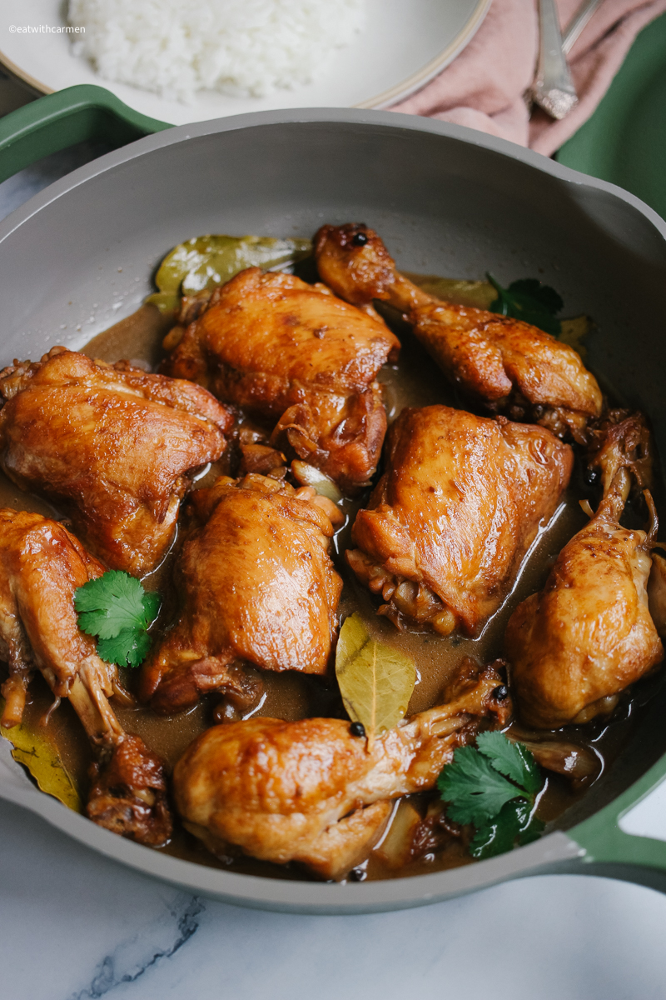
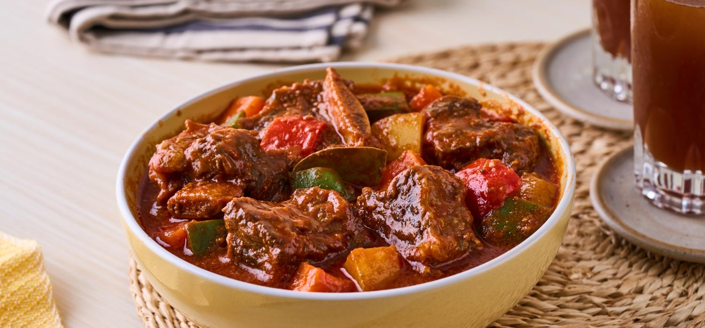
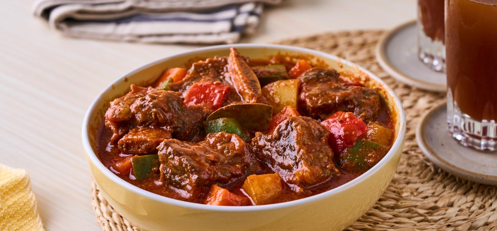

My Favorite Filipino Dishes
Popular Filipino Dishes
Discover some of the most popular and delicious Filipino dishes.
My Favorite Recipes
Here are some images of Filipino food that will make you crave for more!
 

Why this is my favorite food.
This Filipino cuisine is deeply rooted in the cultural and emotional significance of food in every Filipino Households.